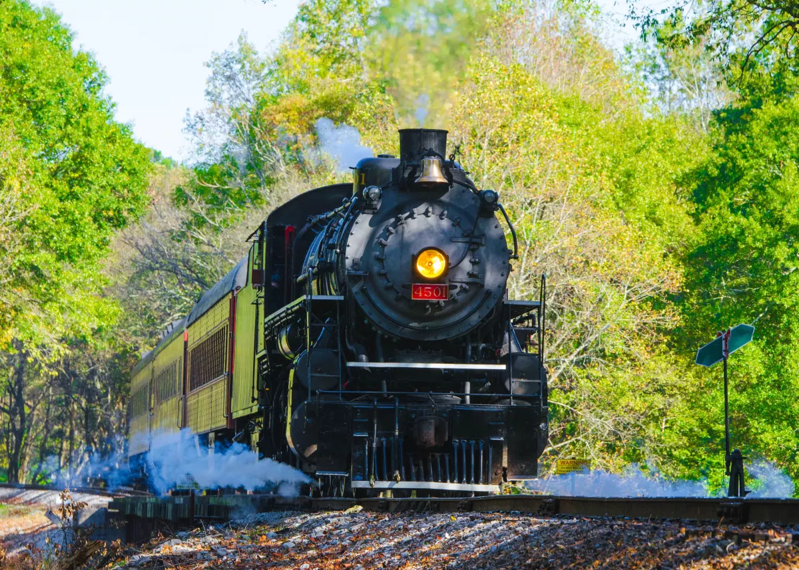

City sight
Chattanooga Zoo
On a 14-acre plot of land is the beautiful Chattanooga Zoo. Chattanooga zoo has species from all over the world in their own habitat. The zoo is large enough to take up an hour of walk to walk through. And is overall a beautiful and fun location.

Hunter art museum
The museum is at beautiful location while also being a beautiful location itself. The hunter museum has five large rooms containing artwork from classic- abstract. With its ever-changing art displays it is a unique experience every time.

Tennessee Aquarium
with 10,000 animals to observe you will want to visit the Tennessee aquarium. With hands-on experiences for everyone it is a fun experience for all. The aquarium is both equipped with fresh water and saltwater Aswell as having a Tennessee river specific species so you can get a better look at the beautiful creatures in our river.
Tennessee valley RR Museum
At the Tennessee valley RR museum, you will discover the history of rail roads in Chattanooga. Ride a restored vintage locomotive and see the beautiful landscape. It is best to plan a couple of hours for your trip, for the train ride and the museum.
